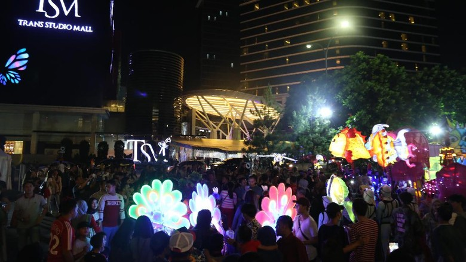
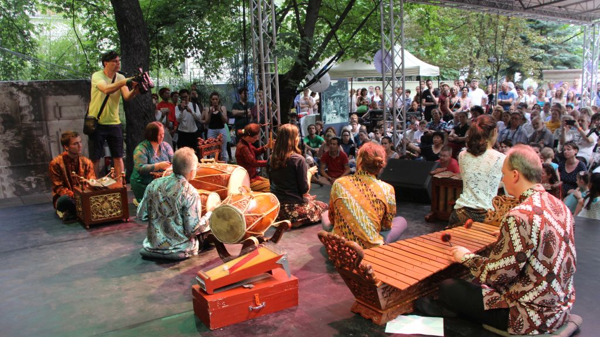

Summer Festival
Summer Festival adalah festival yang diadakan setiap bulan Juni hingga Agustus. Cara perayaan Summer Festival ini oleh setiap negara dilakukan secara berbeda.
Di indonesia tepatnya di Kota Bandung sering diselenggarakan acara Summer festival ini. Dalam acara tersebut Warga dan juga wisatawan dapat menikmati kuliner dan berbagai barang industri kreatif. Bandung Summer Festival bertempat di area plaza dan parkir Masjid Trans Studio Bandung. Acara ini berlangsung dari tanggal 21 Juni hingga 9 Juli 2017. Dengan mengusung tema 'Creative Food and Fashion Festival'
Di luar negeri tepatnya di kota Hongaria Hongaria pada musim panas 2019 juga mengadakan berbagai festival budaya untuk masyarakat Hongaria dan juga demi menarik wisatawan mancanegara untuk berlibur ke Hongaria. Musim panas 2019 terdapat 10 Summer Festival yang berlangsung selama bulan Juni hingga Agustus 2019.
